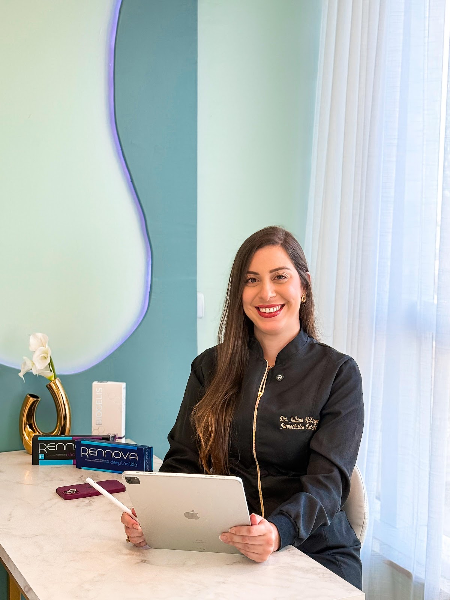
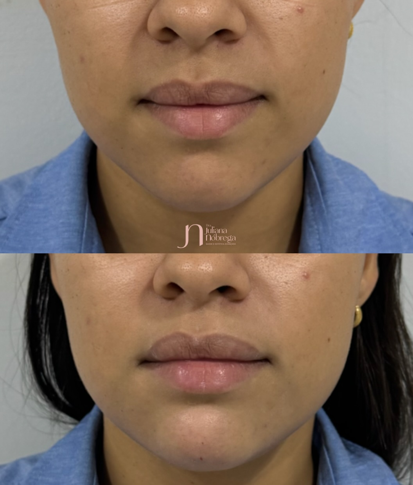
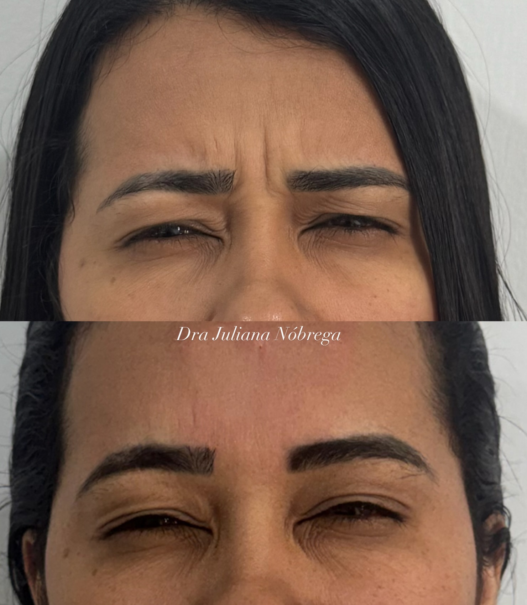
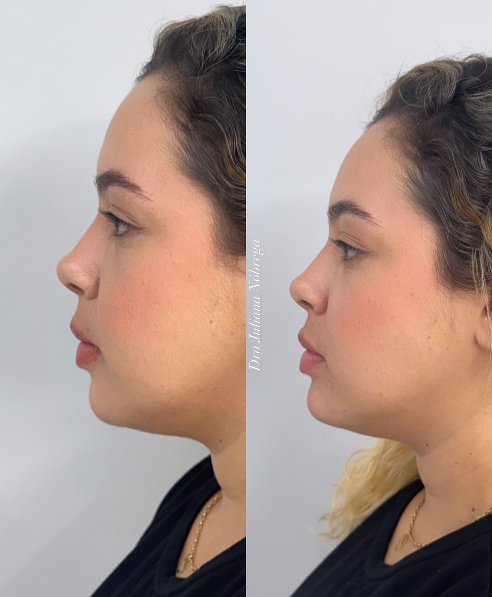

01
Harmonização Facial
Equilíbrio entre traços com técnica e proporção, valorizando a sua identidade — sem exageros.
Harmonização facial, preenchimento e protocolos personalizados com a Dra Juliana Nóbrega — resultados naturais, com técnica e segurança.

A Dra Juliana Nóbrega é farmacêutica esteta e atende em Imperatriz com um princípio simples: resultado bonito é resultado que respeita o seu rosto e o seu corpo. Cada protocolo começa por uma avaliação cuidadosa — nada de pacote pronto.
No consultório do Edifício Aracati Office, ela une técnica avançada, produtos de alto padrão e atendimento próximo para entregar harmonização e procedimentos faciais com aparência natural. É essa combinação que sustenta a nota máxima de quem já passou por aqui.
Tratamentos faciais e de saúde estética conduzidos pessoalmente pela Dra Juliana, do diagnóstico ao acompanhamento.
Equilíbrio entre traços com técnica e proporção, valorizando a sua identidade — sem exageros.
Suavização das rugas de expressão da testa, glabela e olhos, preservando a naturalidade do movimento.
Contorno e volume na medida certa, com aspecto hidratado e simétrico — lábios bonitos, nunca artificiais.
Estímulo natural de firmeza e qualidade da pele, com produtos de alto padrão para um efeito gradual e duradouro.
Protocolos para redução da gordura submentoniana e contorno do terço inferior do rosto e pescoço.
Avaliação de marcadores e protocolos que cuidam da estética com base na sua saúde por dentro.
Casos conduzidos pela Dra Juliana Nóbrega. Cada rosto tem um plano próprio — estes são alguns dos resultados.



Resultados variam de pessoa para pessoa, conforme a avaliação individual.
“Profissional impecável e atenciosa do início ao fim. Me senti segura, o resultado ficou super natural e exatamente como eu queria.”